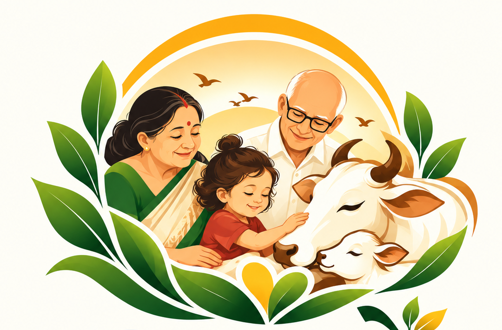

Respect food
Invite households to separate suitable surplus rotis, rice, vegetables and fruits from other waste.

AmarajeSeva Sansthanअमराजे सेवा संस्थानअन्न का सम्मान, जीवों का कल्याण, स्वच्छ और संवेदनशील समाज।
We are building a local, community-led effort to collect suitable surplus food from willing households and deliver it to partner gaushalas—with care, segregation and transparency.
Amaraje Seva Sansthan is a proposed charitable initiative rooted in a simple idea: when food is suitable and safely handled, it may serve a purpose instead of being wasted.
Invite households to separate suitable surplus rotis, rice, vegetables and fruits from other waste.
Coordinate with gaushalas so only food they agree to receive is delivered, following their feeding guidance.
Bring residents, volunteers and animal-care teams together through a practical local effort.
We will begin with a small pilot and expand only when collection, handling and receiving arrangements are reliable.
Households place suitable food in clean, separate containers—roti, rice and vegetables/fruits.
A planned route and washable, covered containers help keep food separate and protected.
Food is delivered promptly to a partner gaushala that has agreed to accept it.
We plan to publish verified collection, delivery and expense updates as the pilot progresses.
Food safety comes first: We will not collect spoiled, mouldy, contaminated or mixed-with-plastic food. The receiving gaushala will guide what is suitable for its animals.
We will share actual figures only after the pilot begins and records are verified. No impact numbers are being claimed yet.
We are preparing the initiative and its transparent donation process. Contact us to discuss volunteering, in-kind support or future contributions.
Amaraje Seva Sansthan is a proposed initiative. Registration and tax-deduction approvals have not been represented as complete. Please contact us before making any contribution; no payment is collected on this demo website.
We welcome conversations with gaushalas, housing societies and people who want to contribute time or practical support.
Help define acceptable food types, quantities, delivery times and safe feeding guidance.
Explore a partnership →Pilot a simple collection routine with willing households and a clearly communicated schedule.
Plan a society pilot →Support outreach, route coordination, recordkeeping, communications or community awareness.
Join the effort →Tell us how you'd like to participate. This demo form opens an email draft on your device; it does not store submissions online.